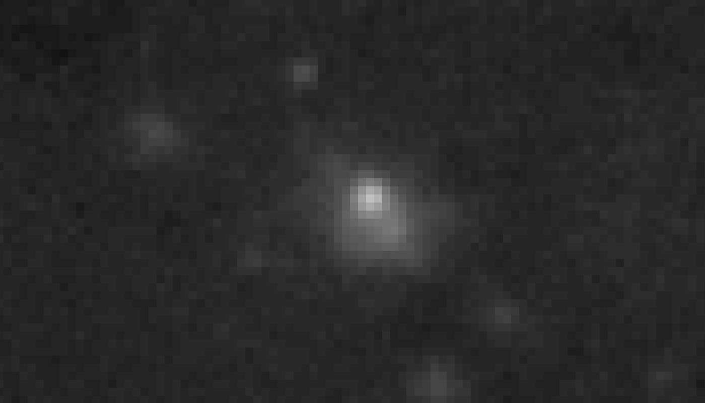
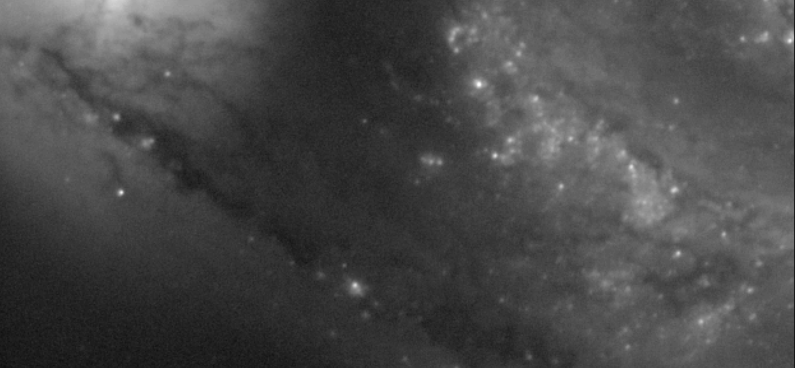

.
czyli o tym, jak nie uronić nic z informacji zawartej w zebranym materiale
06-04-2014
|
Pierwszy raz o niniejszej metodzie wspominałem dnia 06-04-2014 roku, w TYM temacie, następnie przez wiele lat powoływałem się na nią jako źródło moich osiągnięć, a mimo to, furory nie zrobiła, ale nie szkodzi, nowe i niezrozumiałe zawsze przyjmuje się z oporem. WTĘP . Astrofotografowie pozyskany materiał zdjęciowy od zawsze poddają tej samej procedurze, mianowicie, wyselekcjonowaniu najlepszej klatki i zestackowaniu reszty względem niej, tak uzyskany obraz poddają dalszej obróbce graficznej, sądząc, iż już nic więcej, w tym względzie, nie da się przecież zrobić, poza zebraniem jeszcze większej liczby klatek. Jednak poddanie tak ciężko zebranego materiału jednorazowej procedurze stackowania moim zdaniem stanowi straszne marnotrawstwo jego potencjału. No ale w takim razie, co można jeszcze zrobić? Ano, należy poszukać jakiegoś sposobu, na wydobycie wszystkiego, co się da z posiadanego materiału wydobyć, i takim oczywistym sposobem, w moim mniemaniu, jest opisana tu metoda. OPIS . Posiadając dla przykładu 100 dobrych klatek danego obiektu, ładujemy je do programu stackującego, poddajemy selekcji pod względem jakości, następnie: - wybieramy 1 klatkę jako referencyjną i stackujemy resztę względem niej, wynik zapisujemy, następnie: - wybieramy 2 klatkę jako referencyjną i stackujemy resztę względem niej, wynik zapisujemy, następnie: - wybieramy 3 klatkę jako referencyjną i stackujemy resztę względem niej, wynik zapisujemy, następnie: ... ... ... - wybieramy 98 klatkę jako referencyjną i stackujemy resztę względem niej, wynik zapisujemy, następnie: - wybieramy 99 klatkę jako referencyjną i stackujemy resztę względem niej, wynik zapisujemy, następnie: - wybieramy 100 klatkę jako referencyjną i stackujemy resztę względem niej, wynik zapisujemy. W zależności od rodzaju uprawianej astrofotografii dobieramy stosownie algorytmy stackowania. Następnie uzyskane 100 stacków poddajemy ostatecznemu stackowaniu (stackowanie stacków), najlepiej różnymi algorytmami, dla sprawdzenia, który z nich dla danego materiału sprawdzi się najlepiej. Dopiero taki wynik poddajemy ostatecznej obróbce graficznej. Uzyskamy jeszcze lepsze efekty, jeśli uzyskane stacki poddamy częściowej identycznej obróbce i dopiero taki materiał poddamy stackowaniu stacków. PRZYKŁADY . Główny zarzut osób niewierzących w skuteczność prezentowanej tu niekonwencjonalnej metody brzmi mniej więcej tak: "Nie ważne w jakiej konfiguracji zestackujesz dany zestaw klatek, ostateczny wynik będzie taki sam ! " Są w błędzie, a ich założenie wynika z braku dostatecznego doświadczenia w tej dziedzinie. Wynik nie będzie taki sam, a to z uwagi na fakt, iż każda nasza kolejna klatka referencyjna jest inna od poprzednich i jako punkt odniesienia do wyrównania pozostałych klatek (na poziomie pixelowym i subpixelowym), da nam inny wynik końcowy. Przykład poniżej, zbliżenie na ten sam rejon zdjęcia, na różne stacki.  Niniejsza metoda nie tworzy nic nowego, ona jedynie (lub aż), sprawia, że zarejestrowany detal jest mocniejszy niż przy pojedynczym stackowaniu. Przykład poniżej. Ma się wrażenie, że autor dozbierał klatek, a czy nie o to nam chodzi w tej zabawie? :)  Moja metoda jest niestety pracochłonna, z uwagi na fakt braku możliwości automatyzacji procesu, i czas potrzebny na samo stackowanie, zapisywanie, obrabianie pośrednie. Bywa, że poświęcam na ten cel tygodnie, ale widząc efekty, znajduję motywację. Przykłady zastosowania i uzyskanych efektów. Messier 82 | Messier 27 | Messier 51
MOGĄ CIĘ ZAINTERESOWAĆ RÓWNIEŻ


|